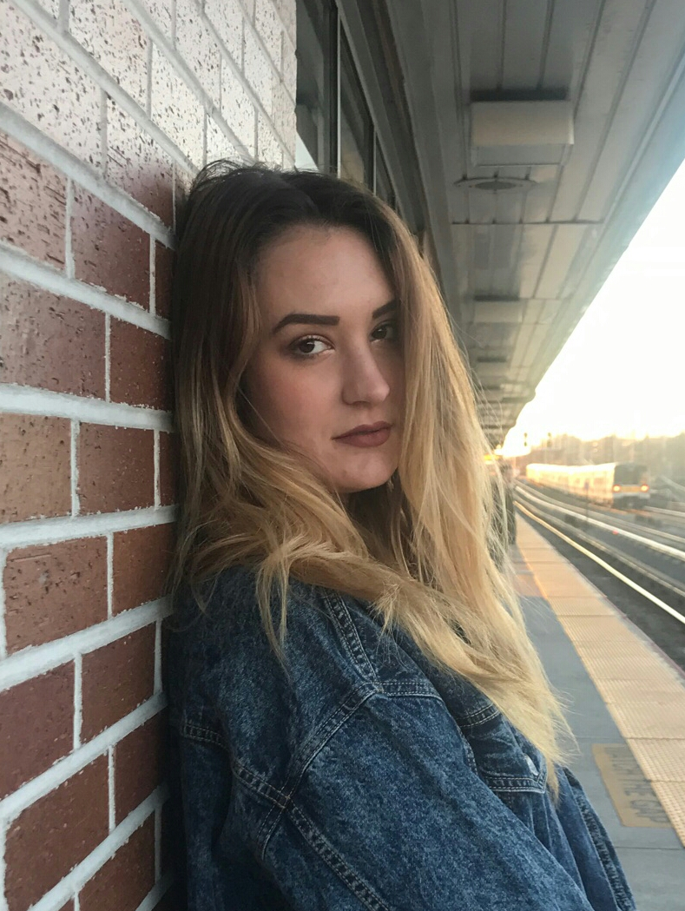

About me:

My name is Jennifer Nicole Schneidmuller. I am 21 years old and I live in Valley Stream, NY. Ever since I was a child I have loved everything artistic. As I got older, creating my own art took a backseat to school. I maintained an appreciation for others’ work and was always a fan of the art community. I have recently rekindled my drive to create art and my desire to be creative is stronger than ever. This website will be a place for me to share my future work.
Thank you for taking the time to visit!